Image Warping, Mosaicing, and Autostitching
Overview
In Part A, I warped photos taken from one spot into a single mosaic using homographies. In Part B, I replaced the point matching with my own pipeline: Harris corners, ANMS, MOPS-style descriptors, ratio-test matching, and RANSAC. I wrote the homography solver, both warps, the blending, and the Part B pipeline myself. I used numpy for linear algebra and scipy only for Gaussian filters, a maximum filter, and the distance transform. I did not use any built-in homography, warping, or corner detection functions.
Image warping and mosaicing
Everything in this part uses the photos below. Part B reuses them.
Shooting the pictures
I shot from one window and turned the phone without moving it, so the photos are related by a homography. Set 1 is two photos with about 80% overlap. Sets 2 and 3 come from a sweep of seven photos, using three of them and all seven. Sets 4 and 5 are two five-photo sweeps of a different scene, with the sun in the frame. All the sweep photos were shot in portrait, so I rotated them upright. An earlier pair (IMG_0091 and IMG_0092) did not work; see the notes at the end.
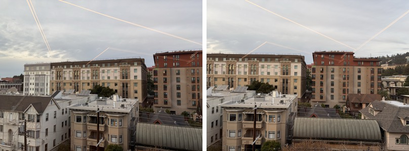

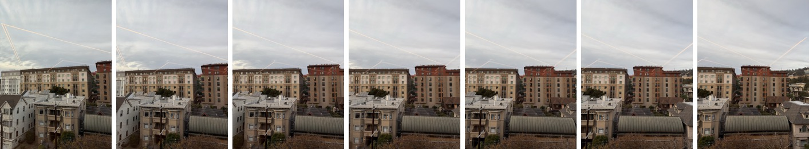
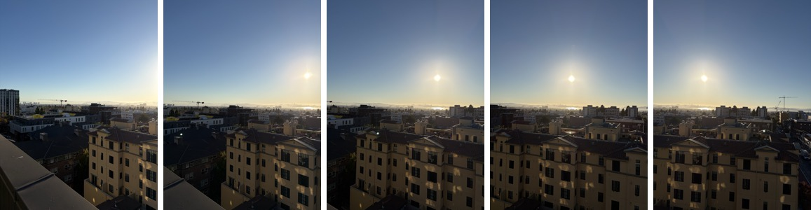
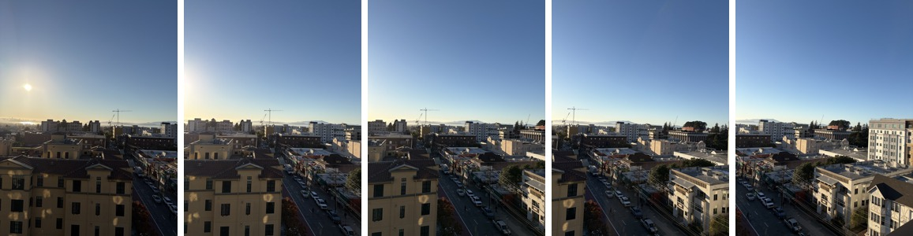
Recovering homographies
A homography maps (x, y) to (x′, y′) with p′ = Hp, where H is 3×3 with its last entry fixed to 1. Multiplying out the denominator gives two linear equations in the eight unknowns for each correspondence:
[ 0 0 0 x y 1 −xy′ −yy′ ] h = y′
I stacked these into a 2n×8 system A h = b and solved it with np.linalg.lstsq, which gives a least-squares fit when n > 4. computeH(im1_pts, im2_pts) returns the H that sends image 1 points to image 2. On synthetic data, four exact points recovered a known H to about 1e-12.
Correspondences. I did not click points by hand. I matched SIFT features, ran RANSAC with my own computeH to remove bad matches, and kept the 12 most spread-out inliers per pair (24 equations). Each numbered point lands on the same feature in both photos.


For set 1, the first four correspondences (image 2 to image 1) give these rows of the 24-row system:
[ 470 276 1 0 0 0 -328060 -192648 ] [h1..h8]ᵀ = 698 [ 0 0 0 470 276 1 -135830 -79764 ] = 289 [ 508 701 1 0 0 0 -386588 -533461 ] = 761 [ 0 0 0 508 701 1 -377952 -521544 ] = 744 ...
The recovered homography that maps image 2 into image 1 is:
H = [[ 0.60707 0.02164 273.888 ]
[ -0.17828 0.83767 87.060 ]
[ -0.00039 -0.00002 1 ]]
The 274 px translation matches the overlap, and the small bottom-row entries show a slight turn between the photos.
Warping the images and rectification
Both warps use inverse warping. I push the image corners through H to size the output, then map each output pixel back through H-1 to its source location, with (0, 0) at the center of the first pixel. Pixels that map outside the source get alpha = 0.
- Nearest neighbor rounds the source coordinate to the closest pixel and copies it.
- Bilinear takes the four surrounding pixels and weights them by how close the source point is to each.
To test the warps, I rectified two planar rectangular walls. I read the four corners off gridded crops and mapped them to a rectangle whose width and height I chose by eye. The red outlines show the corners.
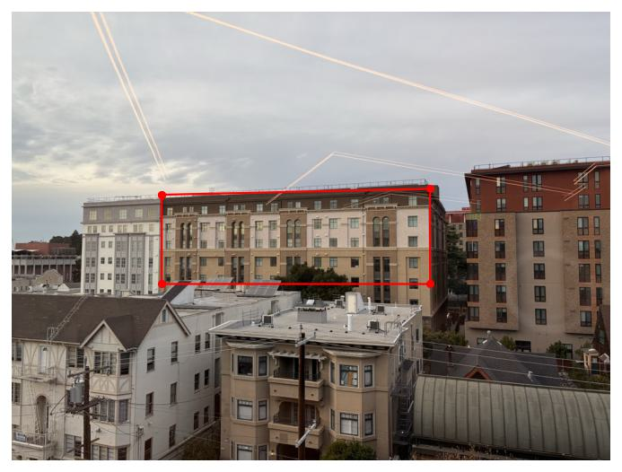
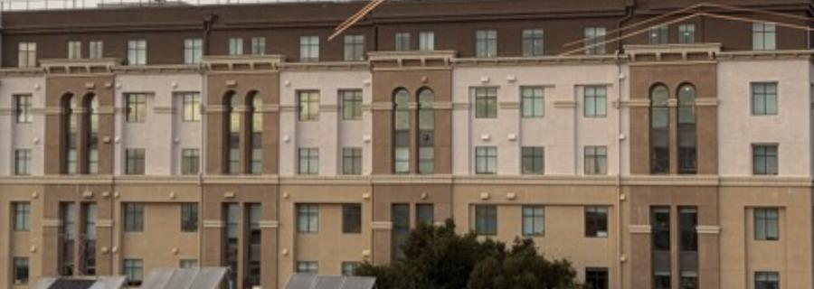
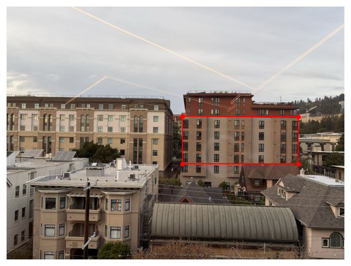

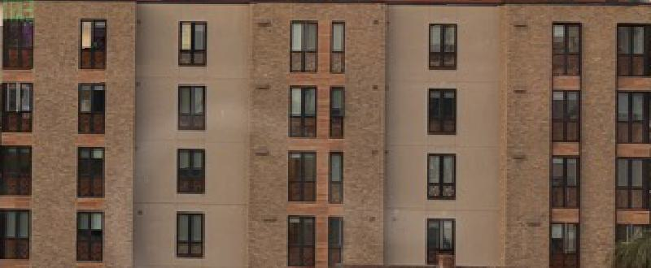
In both results the window rows are level and the columns are vertical. On the brown building, the string courses between floors are now horizontal.
Nearest neighbor vs. bilinear
4× zooms of the same region of each rectified facade (left: nearest neighbor, right: bilinear):
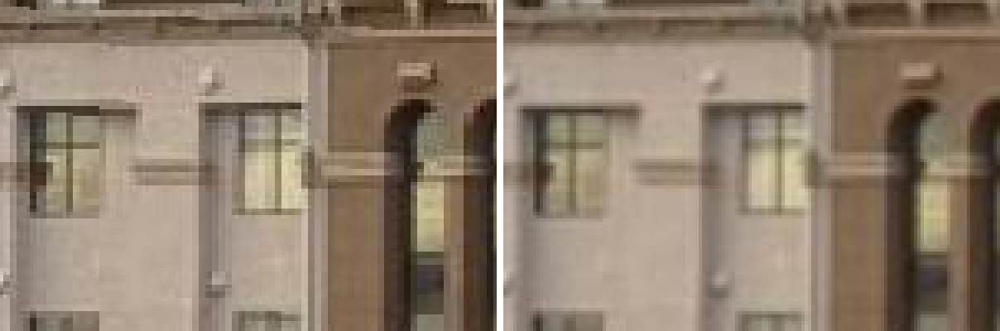

| Image | Nearest neighbor | Bilinear |
|---|---|---|
| Brown facade | 0.023 s | 0.049 s |
| Brick facade | 0.018 s | 0.052 s |
Nearest neighbor is two to three times faster, since it does one lookup per pixel instead of four plus weighting. The cost is jagged, stair-step edges on window frames and floor lines. Bilinear is smooth but slightly blurrier. Both are fast at this size, so I used bilinear for everything else.
Blending the images into a mosaic
Procedure. I picked a reference photo, chained the pairwise homographies to map every photo into it, sized one canvas to fit all the warped photos, and warped each onto it with bilinear interpolation. The black areas around each mosaic are outside every photo, which a planar warp cannot avoid.
For each photo, I used a weight equal to the distance transform of its border (0 at the edge, largest at the center), warped along with the photo and normalized at every pixel. I tried two blends:
- Feathering: a weighted average of the photos at every pixel.
- Two-band: average a blurred copy of each photo using those weights, and take the fine detail from the photo with the largest weight at each pixel, so detail is never averaged between slightly misaligned copies.
Mosaic 1: two photos
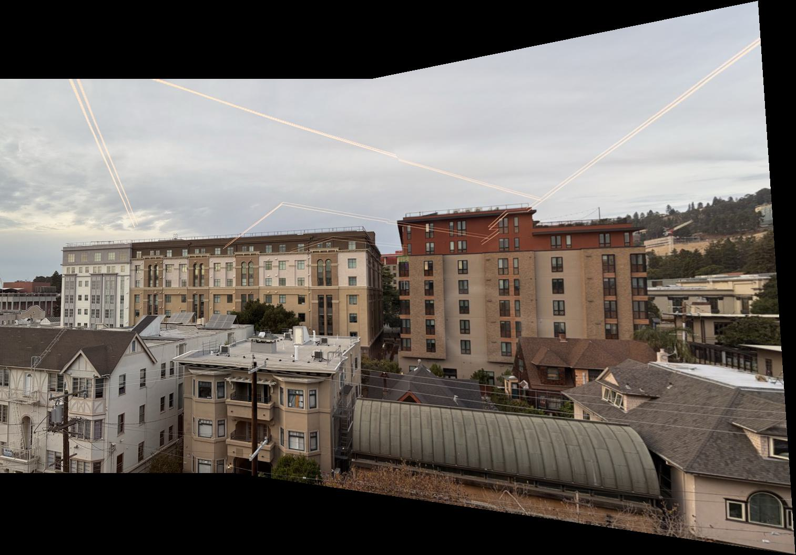
This is the best result. The overlap is large, so the warp is gentle and the buildings line up across the join. The airplane trails break at the seam because the planes moved.
Mosaic 2: three photos
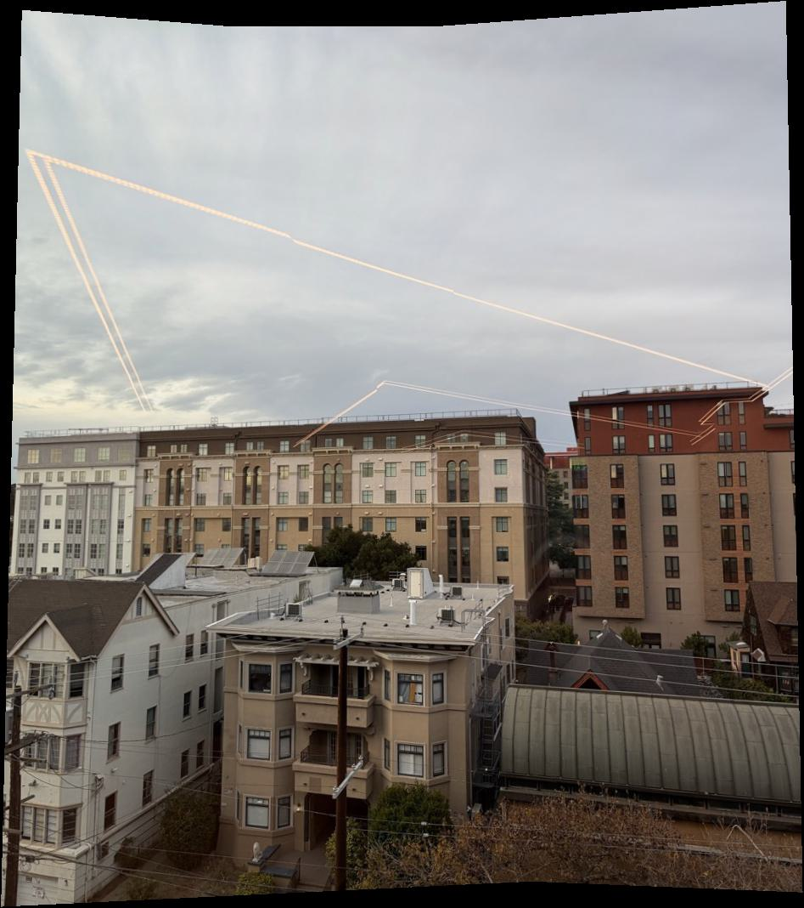
The middle photo is the reference, so the canvas bends at the edges. I could not find a visible seam apart from the airplane trails.
Mosaic 3: seven photos
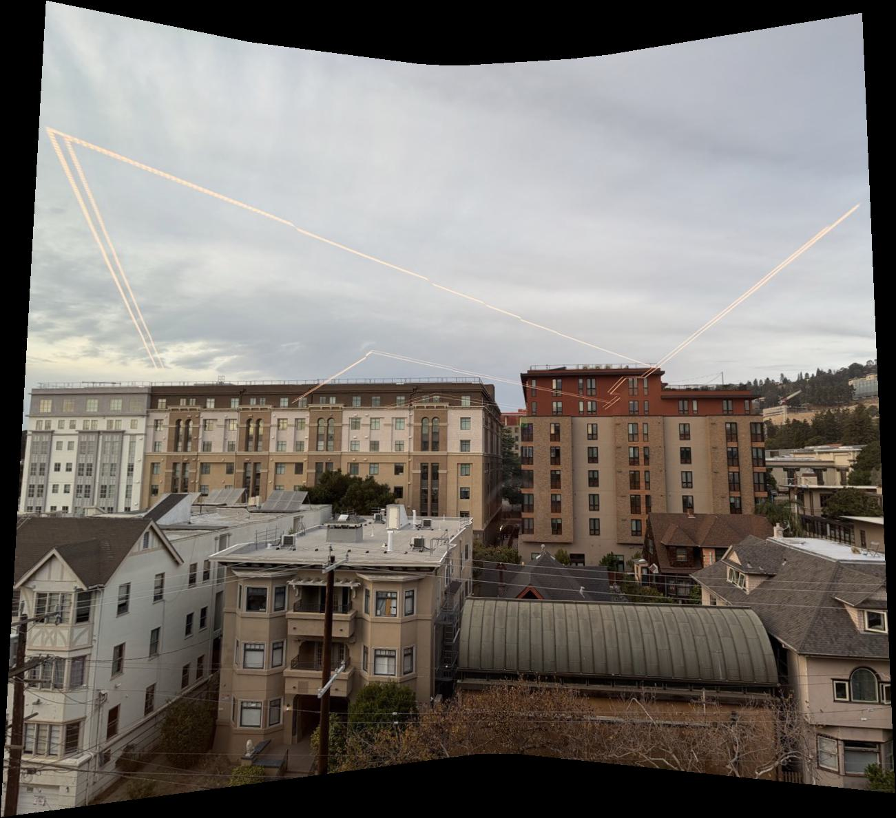
I chained six homographies for the whole sweep. The buildings still line up, and the top and bottom edges of the canvas curve, which is the cost of warping a wide sweep onto a plane.
Mosaic 4: five photos, new scene
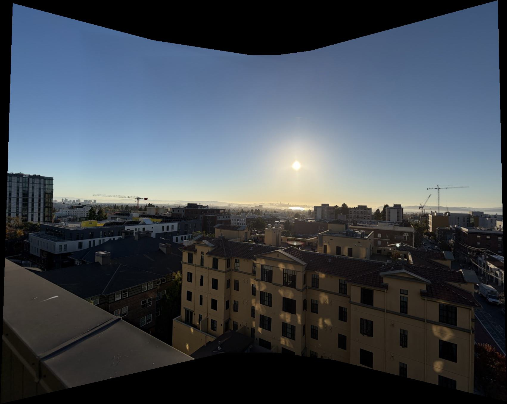
The sun and its glow are in the frame, and a small lens-flare ring from the sun shows near the center. I could not find a visible seam in the sky or on the buildings. The canvas curves at the top and bottom, which is the cost of a wide planar mosaic.
Mosaic 5: five photos, new scene
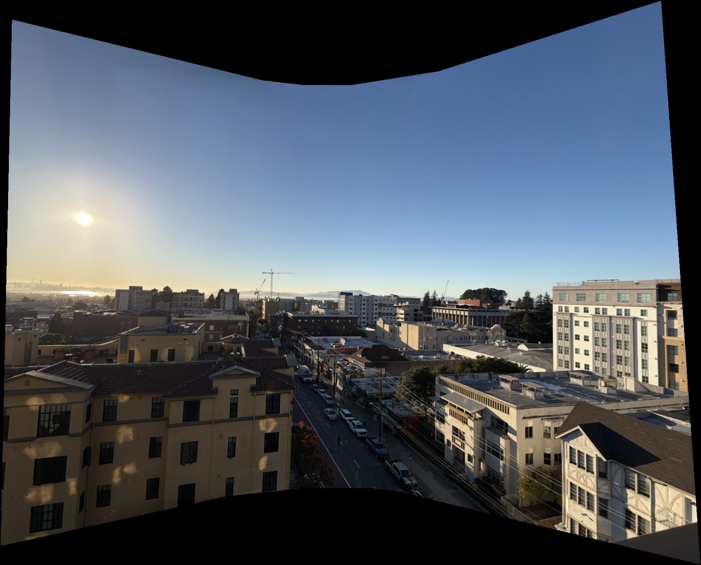
This sweep looks down the street, with the sun at the left edge. The buildings and cars line up across the joins.
Feathering vs. two-band

I could not see a clear difference between them on these photos because the alignment is already good. I kept two-band as the main result because it cannot ghost when alignment is slightly off.
Feature matching for autostitching
In Part A, SIFT found the points for computeH. In Part B, I wrote the matching pipeline myself, following Brown et al., Multi-Image Matching using Multi-Scale Oriented Patches, with a single scale, no rotation invariance, and no wavelets. Its output feeds the same warping and blending code.
Harris corners and ANMS
I took Gaussian derivatives (σ = 1) and built the structure tensor with a second Gaussian (σ = 1.5). The corner strength is the harmonic mean of the eigenvalues, det / trace. I kept 3×3 local maxima above 1% of the largest strength, ignoring a 20 px border. This gave 3,156 corners on the first photo of set 1, bunched on high-contrast areas like windows.
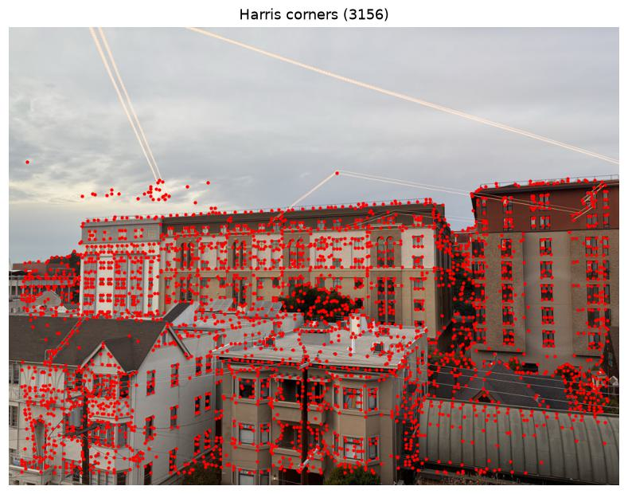
ANMS gives each corner a radius: the distance to the nearest corner that is clearly stronger (its strength × 0.9 is still larger). I kept the 500 corners with the largest radii, so they spread evenly over the scene instead of piling up on the windows. For speed, I only run this on the 4,000 strongest corners, and there were fewer than that here.
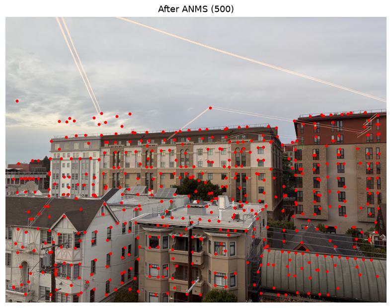
Feature descriptors
For each corner, I took a 40×40 window from the image blurred with σ = 2, sampled it every 5 pixels to get an 8×8 patch, and normalized the patch to zero mean and unit standard deviation. This makes each value an average over a region and removes brightness and contrast differences. Corners whose window runs off the image are dropped.
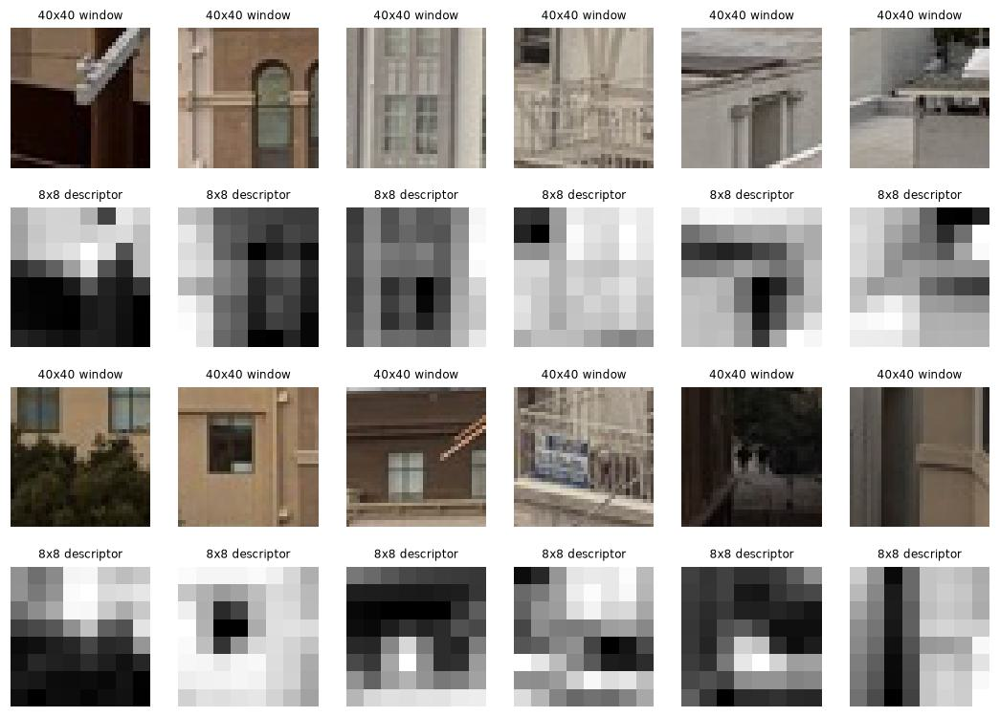
Feature matching
For each descriptor in the first image, I found its two nearest neighbors in the second and kept the match only if distance 1 / distance 2 is below a threshold (Lowe's ratio test). A correct match has a clear winner. I did not read a value off Figure 6b of the paper. Instead, I tried several thresholds on set 1 and counted RANSAC inliers:
| Ratio threshold | Matches | Inliers | Inlier rate |
|---|---|---|---|
| 0.4 | 80 | 80 | 100% |
| 0.5 | 112 | 111 | 99% |
| 0.6 | 151 | 148 | 98% |
| 0.7 | 179 | 173 | 97% |
| 0.8 | 217 | 199 | 92% |
| 0.9 | 273 | 213 | 78% |
A higher threshold gives more matches, but a growing share are wrong. I used 0.6, where 98% of matches are inliers. In the figure, green lines are RANSAC inliers and red lines are rejected matches. The two long lines near the top come from the airplane trails, and the red one was rejected.
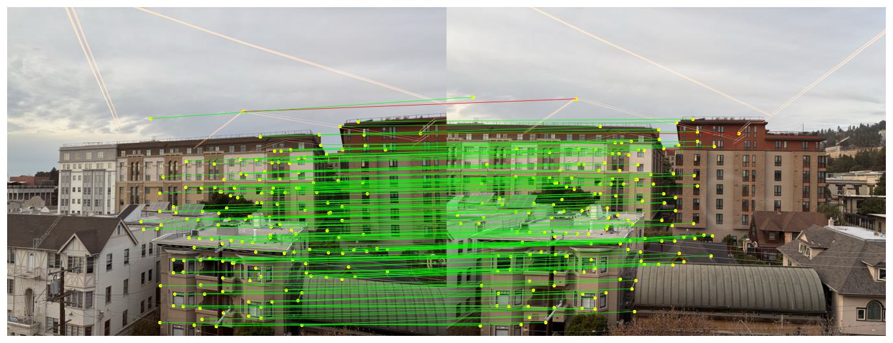
RANSAC and automatic mosaics
I wrote 4-point RANSAC from scratch. In each of 3,000 iterations, I computed H from four random matches using my computeH and counted the matches that land within 3 px of their partner. I kept the largest inlier set and refit H to it by least squares. The ratio test removes most wrong matches, so few were left to reject:
| Pair | Matches | Inliers |
|---|---|---|
| 93 → 94 (set 1) | 151 | 148 |
| 95 → 96 (sets 2 and 3) | 349 | 344 |
| 96 → 97 (sets 2 and 3) | 352 | 351 |
| 97 → 98 | 365 | 357 |
| 98 → 99 | 381 | 376 |
| 99 → 100 | 369 | 364 |
| 100 → 101 | 360 | 354 |
| 201 → 202 (set 4) | 280 | 276 |
| 202 → 203 (set 4) | 302 | 300 |
| 203 → 204 (set 4) | 294 | 285 |
| 204 → 205 (set 4) | 266 | 263 |
| 206 → 207 (set 5) | 268 | 262 |
| 207 → 208 (set 5) | 303 | 301 |
| 208 → 209 (set 5) | 291 | 280 |
| 209 → 210 (set 5) | 281 | 279 |
For set 1, the automatic H is very close to the Part A H:
Part A: [[ 0.6071 0.0216 273.89 ] Part B: [[ 0.6135 0.0031 277.97 ]
[-0.1783 0.8377 87.06 ] [-0.1663 0.8227 86.87 ]
[-0.0004 -0.0000 1 ]] [-0.0004 -0.0000 1 ]]
I pushed the four corners of the 1000×750 photo through both matrices. They land within 4, 11, and 5 px of each other at three corners and 40 px apart at the far top-right corner. That corner is farthest from the overlap, so a small difference in H grows there.
Part A vs. Part B
I built the same five mosaics with the same references and blend: Part A on the left, Part B on the right. Note: my Part A points were not clicked by hand. They came from SIFT and RANSAC, so this compares two automatic methods, not manual vs. automatic.
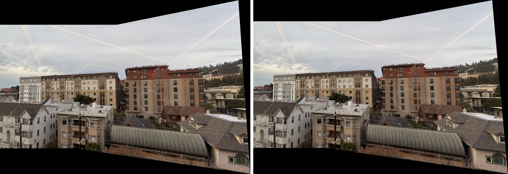
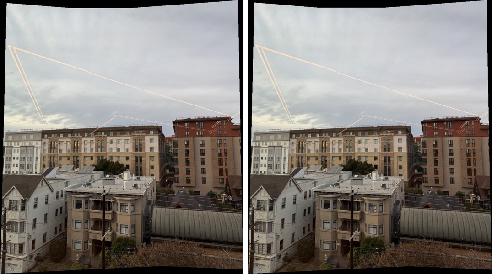
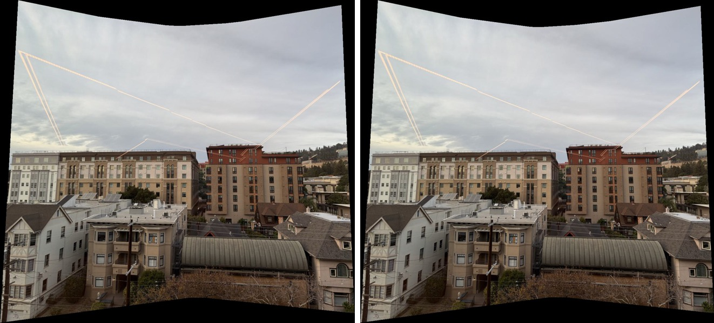
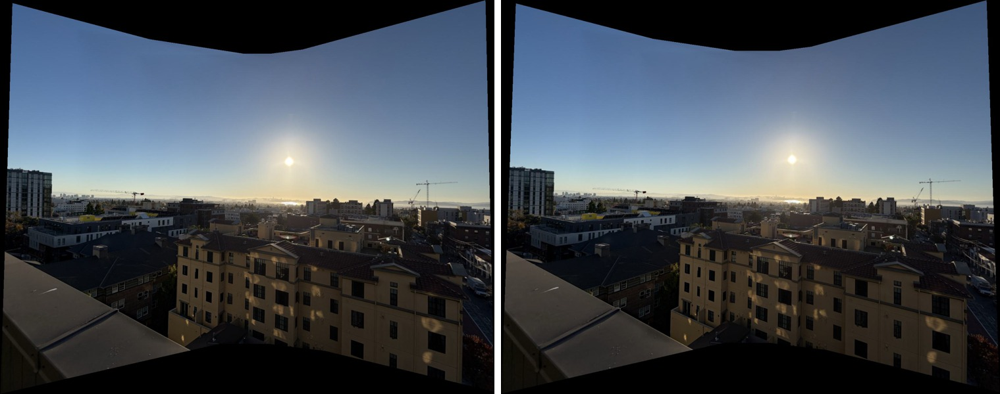
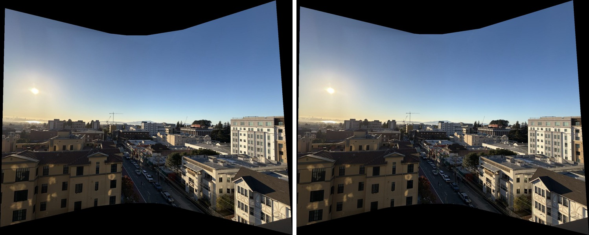
The two sides look nearly the same, including on the seven-photo sweep and the new scene. The one visible difference is the canvas outline at the far right of set 1, which matches the 40 px corner difference above. The airplane trails break in both because the planes moved.
The seven-photo sweep, matched automatically
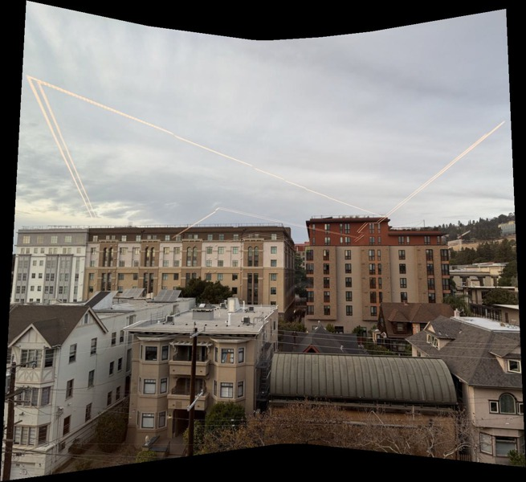
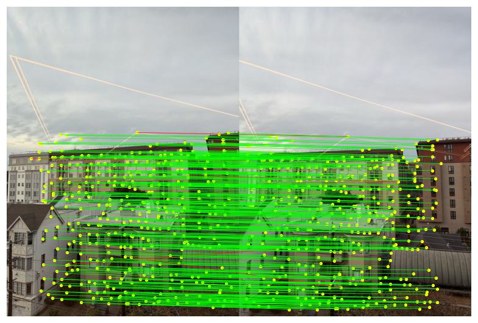
An attempt that did not work
My first pair, IMG_0091 and IMG_0092, overlapped by only a third and was turned by a large angle. The 12 correspondences were fine (all implied a shift of about 650 px), but the homography stretched the far edge of the second photo about five times and the mosaic became a wide wedge, because a planar mosaic cannot represent a wide rotation. I reshot with more overlap.
What I learned
In Part B, I learned that the early filters do most of the work. ANMS spreads the points over the overlap and the ratio test removes most wrong matches, so RANSAC had little left to remove. With 98% of matches already correct, it was almost a formality on these photos. I expect it matters more on repetitive scenes.
The shape of a mosaic depends heavily on how the photos were shot. The homography is a small least-squares problem and was correct whenever the overlap was large, but when the photos were far apart the same correct math gave a stretched, unusable result. The feather weights also matter more than the blend: once every photo fades out at its own border, the seam almost disappears.